2020-2021 ADVISOR AND DIRECTOR BOARD

JUSTIN ST. CHARLES
Faculty Advisor (he/him/his)
"Clarity builds confidence." - DeAndre Carter, former MSU advisor
and motivational speaker.
I am the Academic Advising Director for the Brody Neighborhood within the Neighborhood Student Success Collaborative (NSSC). I oversee the advising services of the Brody Neighborhood Engagement Center and work with partners across the University to support undergraduate students. The population I work with specifically is Michigan State University’s Exploratory Preference and exploring students. I serve as the Assistant Dean designee for administrative functions for our Exploratory Preference students which includes readmissions, reinstatements, medical withdrawals, grief absences, late drops, and more.
I believe that SSN is a benefit to students because there is a special bond that exists for those who are considered peers. Empathy is probably one of the most powerful tools to support one another and having shared identities (including being MSU students) helps others feel that they are not alone.
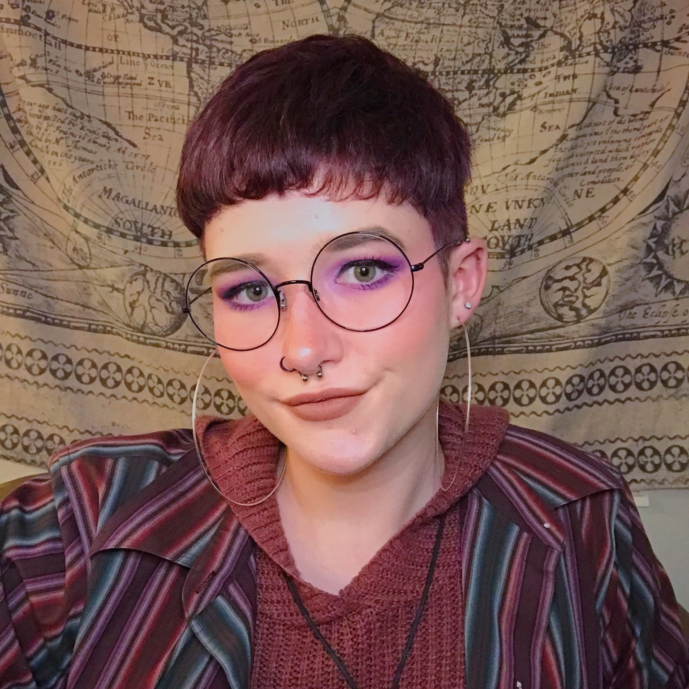
GABBY CUSHMAN
Executive Director (she/her/hers; they/them/theirs)
My name is Gabby Cushman, I am a Senior majoring in Professional Writing. As Executive Director, I essentially delegate tasks to the rest of the director team to keep our organization running smoothly! It's my job to stay on top of everything that's going on within Spartan Support Network so all of our members, leaders, and directors have great experiences as a part of our organization. As someone who personally deals with an anxiety disorder, I thought I could use my experiences with mental illness to help other MSU students going through the same thing. Now, I'm grateful for the many supportive and amazing friends I made throughout my time in SSN.
SARAH GESIK
Director of Leader Development (she/her/hers)
I’m a senior and Psychology major who cares a lot about student wellness. As director of leader development, I oversee the leaders, help educate them on various mental health topics, and make sure groups are running smoothly. I want to help others using my personal experience with mental health and illness, and decrease the stigma around mental health. I also love baking, playing the trumpet, and animal crossing!

CHRISTIAN DEMOSS
Director of Operations (he/him/his)
My name is Christian DeMoss and I am a junior majoring in Political Science. As the Director of Operations, I do a lot of the behind the scenes work such as sending out emails and managing the website. I joined Spartan Support Network my freshman year because a group trying to promote mental health and people connecting to each other appealed to me. SSN was everything I hoped for and I stayed, becoming a leader and then a director to help out the organization! Outside of SSN I enjoy playing Dungeons and Dragons and painting miniatures.

FAYE KOLLIG
Director of Marketing (she/her/hers)
My name is Faye Kollig, and I'm a junior majoring in Media and Information and Spanish. I am the director of marketing for SSN - I handle promotional materials and social media. I joined SSN as a freshman, and I was a member and a leader before becoming director. I've learned about kindness, compassion, leadership, and community from my fellow members, leaders, and directors, and I'm thrilled to be using my creative skills to help boost an organization I believe in. SSN has helped support me and keep me sane during some of the most challenging years of my life, and I want to help do that for other students. When I'm not working on school, SSN or research, I love to draw, thrift clothes, watch niche competitive reality shows on Hulu, and obsess over fancy coffee.
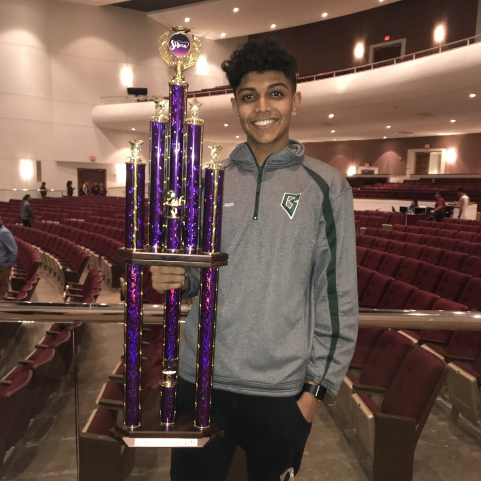
MITHIL GUDI
Director of Business Development (he/him/his)
Hi, my name is Mithil Gudi. I will be a senior at MSU this fall getting my bachelor's in Neuroscience and a minor in Sociology. I have been in SSN for about a year now and was a leader last semester. My director position is the Director of Business Development! I get the privilege of handling the funds and costs for our organization and get to work with the other directors in planning events and fundraisers. I joined SSN to meet a different crowd of people at MSU and to be a part of promoting the mental health of our students!
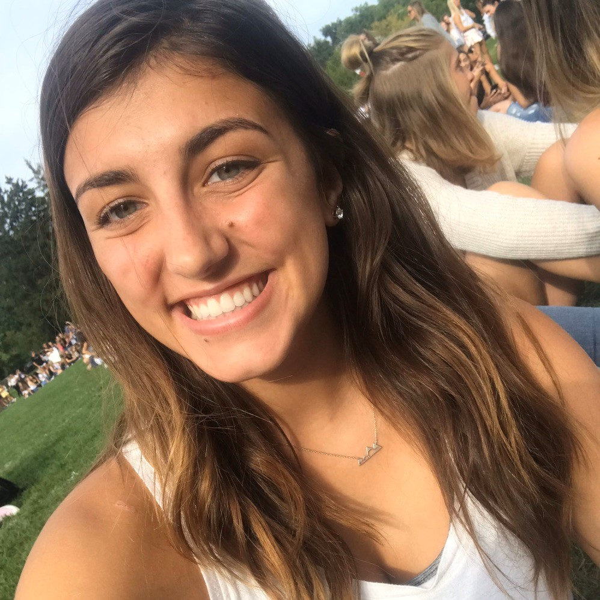
JADE MOROS
Director of Programming (she/her/hers)
My name is Jade Moros. I am senior double majoring in Neuroscience and Psychology with a minor in Cognitive Science. As the director of programming I plan Kick-back Friday events and assist in tabling events/ fundraisers. I have always had a passion for helping others. I thought of no better way of getting more involved at Michigan State than joining Spartan Support Network. As a previous member, leader and now director I am beyond excited for this opportunity to further build and engage with this organization.
2020-2021 WEEKLY GROUP LEADERS
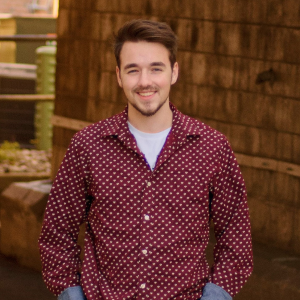
Grant Wiese (he/him/his)
Year: Sophomore
Major: Psychology and Data Science
Hometown: Midland, MI
Fun fact:I’m 5’10 but I told my girlfriend I was 6’ and she believed it for 3 years.
I joined SSN because I wanted to meet people who were different from me and have a place to feel comfortable talking about mental health.
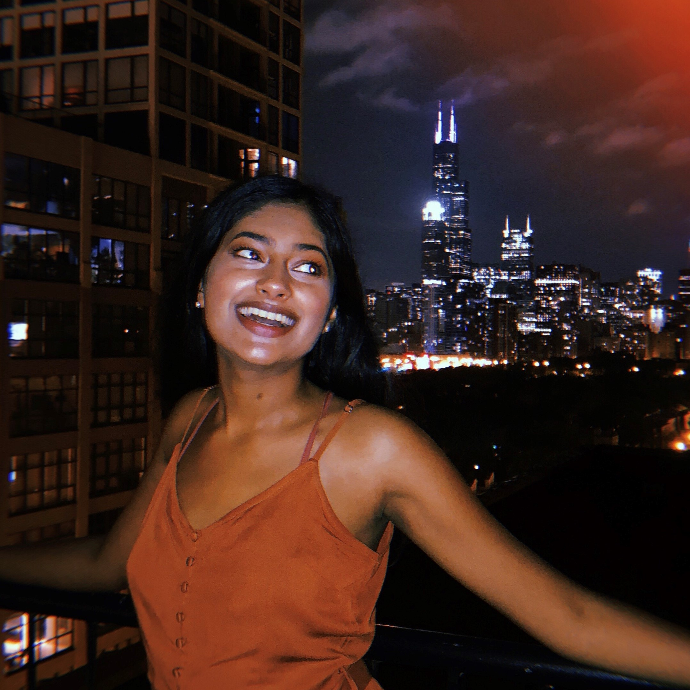
Neha Singh (she/her/hers)
Year: Junior
Major: Experience Architecture
Hometown: Grand Rapids, MI
Fun fact:I’ve been to over 10 concerts! My favorite artists are The 1975, Harry Styles, and SZA.
I joined SSN because my friend told me about her great experience with the group and the amazing people she met!
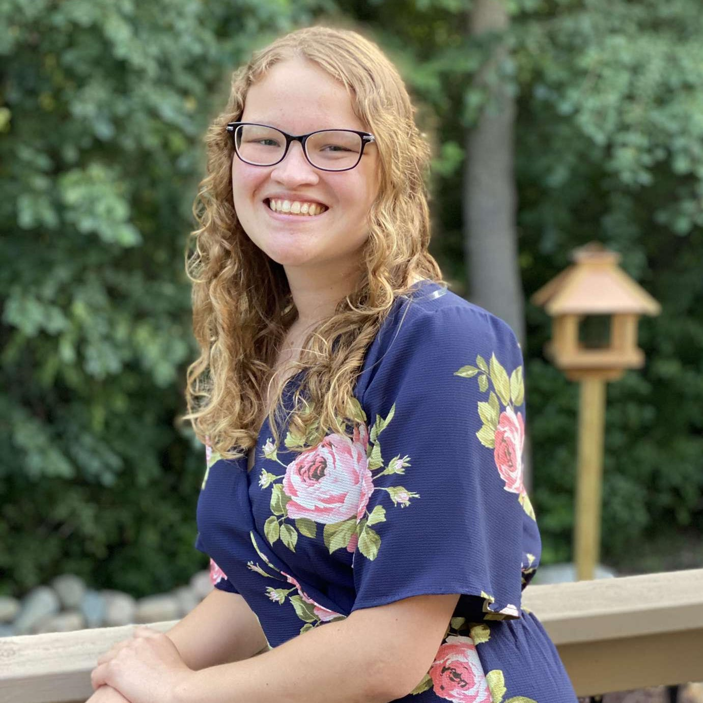
Riley Boomgaard (she/her/hers)
Year: Senior
Major: Psychology
Hometown: Clarkston, MI
Fun fact: I have a pet axolotl!
I joined SSN because I wanted to learn more about mental health and meet new people.
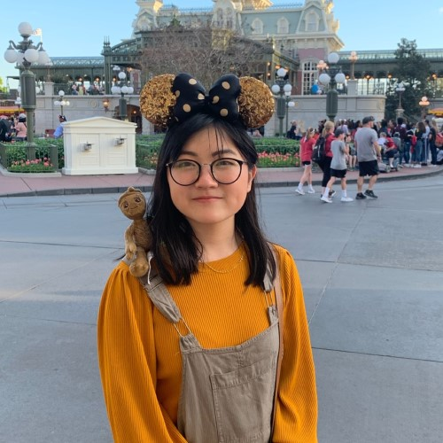
Audrey Yoo (she/her/hers)
Year: Senior
Major: Human Biology
Hometown: Okemos, MI
Fun fact: I have pet tardigrades!
I joined SSN because I grew up in a family where mental health wasn’t talked about. I think it’s incredibly important to break the stigma so that we all can feel less alone in our experiences. Everyone has mental health, and it’s just as important as physical health.
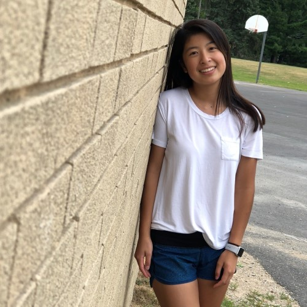
Erica Liu (she/her/hers)
Year: Sophomore
Major: Mechanical Engineering
Hometown: Ann Arbor, MI
Fun fact: I’ve seen the Crazy Rich Asians movie 10 times.
I joined SSN because I want to meet different people and learn about everyone’s unique stories.
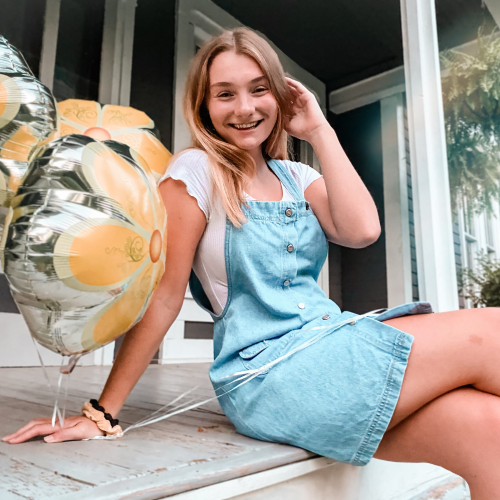
Asia Rivett (she/her/hers)
Year: Senior
Major: Psychology with a double minor in youth/society and education
Hometown: Farmington Hills, MI
Fun fact: My favorite animal of all time is a pigeon and I'm an equestrian
I joined SSN in the spring semester of my freshman year because I wanted to expand myself socially and meet people who more so focused on the mental health and well being of others, as well as to create genuine connections in friendships outside of other people who might just want to go to parties to meet people that way. SSN definitely brought so many valuable friendships into my life and I am forever grateful for that!
Caitlin Hiller (she/her/hers)
Year: Junior
Major: Psychology
Fun fact: I once threw out the first pitch at a Tiger's game!
I joined Spartan Support Network because I thought it was a great way to connect people on campus who would otherwise never meet. Also, it's a great outlet to express the stressful and unique experiences throughout college!

Talia Gruber (she/her/hers)
Year: Junior
Major: Psychology with a minor in youth and society and a minor in Jewish studies
Hometown: Originally from Montréal, QC (Canada), moved and grew up in Boston, MA
Fun fact: I’m on the figure skating team here at MSU (been competing and skating since I was a kid) and I coach lessons on the weekends!
I joined SSN because I wanted to find a space where I could feel safe and comfortable expressing myself while also making connections and hearing from others. Sharing struggles among peers and working through them together helps all of us feel a little less alone in such a big place!
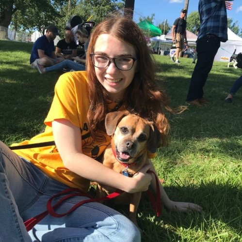
Megan Helisek (she/her/hers)
Year: Junior
Major: Psychology
Hometown: Farmington Hills, MI
Fun fact: I can stand on my head!
I joined SSN because I felt alone and didn’t have many people to talk to about mental health. I also joined to meet new friends where we can openly talk about mental health with no judgement.
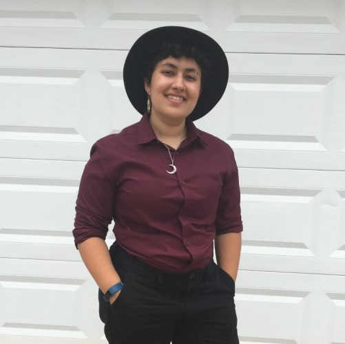
Charlie Woodside (he/him/his)
Year: Senior
Major: Media and Information
Hometown: Bath, MI
I joined Spartan Support because an actor in one of my films suggested it and it sounded like something I'd like, and I do!
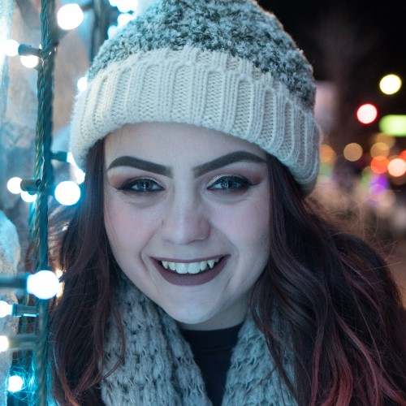
Emma Clemmons (she/her/hers)
Year: Junior
Major: English with a minor in Women and Gender Studies, possibly adding Psychology too
Hometown: Ferndale, MI
Fun fact: I love to read and I read 80 books in 2019, my goal for 2020 is 100 books.
I joined Spartan Support Network because Gabby (Executive Director) introduced me to it and I thought it was cute so I became a member in Fall 2019 and I knew I wanted to be a leader and I love it.
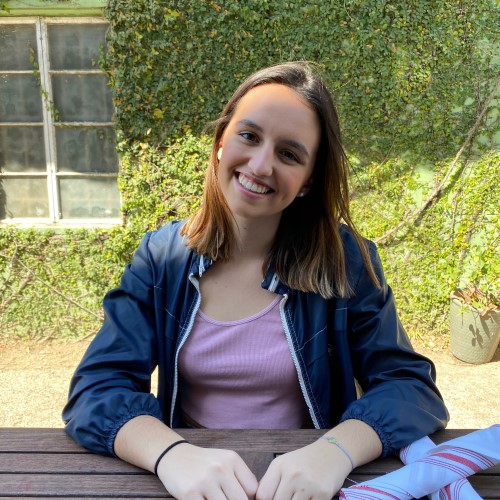
Calista Busch (she/her/hers)
Year: Sophomore
Major: Genetics
Hometown: Cinncinnati, OH
Fun fact: I have webbed toes.
I want to foster a supportive and welcoming environment on campus. College can be challenging and I want to provide students with a space where they can feel safe to discuss any issues or stresses going on in their life.

Evan Hardacre (she/her/hers)
Year: Sophomore
Major: Journalism with a PR minor
Hometown: Cleveland, OH
Fun fact: I am on the Spartan Sailing team and I always put chips in my mac and cheese.
I joined Spartan Support in the hopes of contributing to the positive atmosphere that SSN provides for students. I wanted to help create a safe space for people to come and talk about whatever their hearts desire.
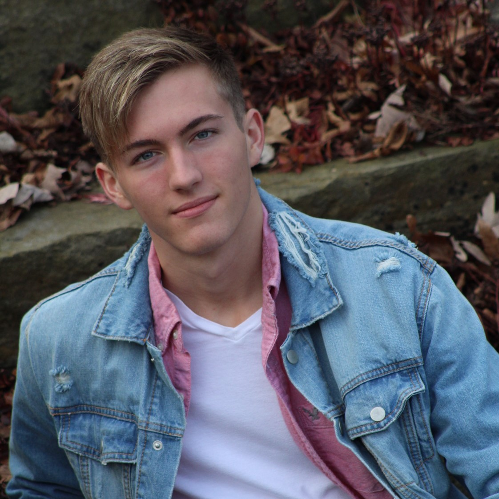
Triston Mayton (he/him/his)
Year: Freshman
Major: Biology
Hometown: Ada, MI
Fun fact: I got my private pilot license this summer.
I joined SSN because I heard about it from Sarah (Director of Leader Development) because we used to work together a few years back!